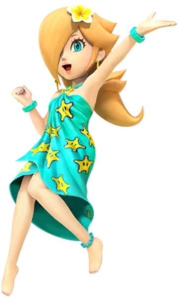
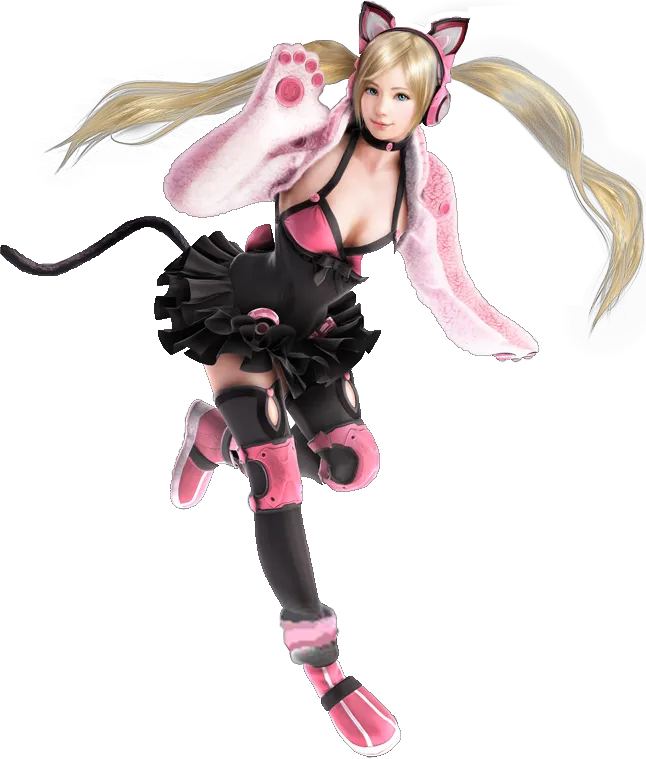
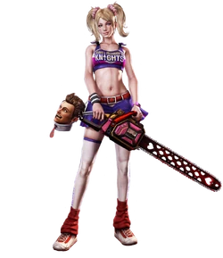
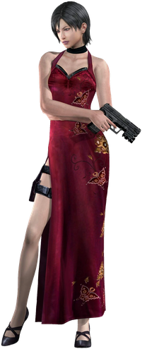
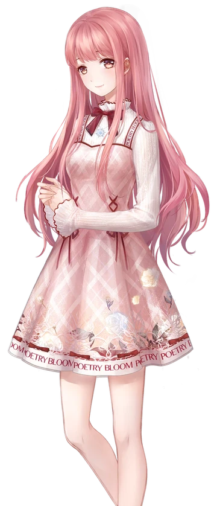

|  |
Princess Rosalina |
Princess Rosalina (Rosetta in the Japanese version) is a major character in Nintendo's Super Mario franchise. |
The Lady of the Shooting Stars |
|  |
Lucky Chloe |
Lucky Chloe (ラッキークロエ Rakkī Kuroe?) is a character in the Tekken series, who is introduced in Tekken 7 as one of the new playable characters. |
Tekken's Cat Girl |
|  |
Juilet Starling |
Juliet Starling (ジュリエット・スターリング, Jurietto Sutāringu) is the main protagonist of Lollipop Chainsaw. She is voiced by Tara Strong. |
The San Romero Knight |
|  |
Ada Wong |
Ada Wong is a former agent of the Umbrella Corporation. Described as one of their “top agents”, she aids Alice in her journey and escape from the Russian Umbrella facility. |
Chinese-American spy and mercenary |
|  |
Nikki |
She is a talented stylist who adores fashion, and she is accompanied on her journey by a small talking cat named Momo. |
Chosen One of Miraland |